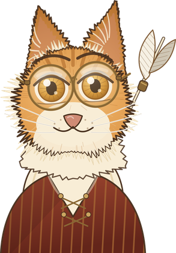

22 one-button arcade games. One cat. One button, asked a different question each time.
Every game is a single self-contained page — no plugins, no downloads, no network after it loads. Space or tap is the only control in all of them. Art is vector-drawn, sound is synthesised in the browser, and nothing here uses a third-party asset.
Games that ask for a moment, and punish you for being early or late.
Games where the button is held, and the question is quantity rather than instant.
Games where the button makes a choice that can be wrong.